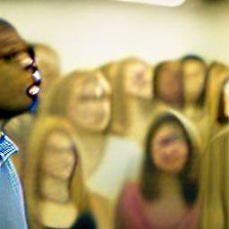

XXV.
Tamaya took me to a religious meeting of moms. They’d invited the new [leader] of the BeaverCreek Education Center in Harold Cox to speak. Tamaya’s mother had made the connection for the group, but she wasn’t in attendance.
Cox wore a gold suit to the small meeting at the small yeshian temple off South FairfieldOsborne RD. The [mostly blanco] women fawned over him, shaking his hand, admiring his outfit, and expressing how happy they were that BCEC was finally going to be run by a proper yeshian. One, whom they seemed to believe, would reincorporate a moral curriculum onto the students there, who’d been permitted to run amuck without proper boundaries.
“I do believe it is important to set boundaries,” Cox responded. “While it is important to have empathy toward the emotions and considerations of young people, it is essential that we remember that these students are still children.”
By instinct, I tried to T-T Tamaya a GIF of young children running an agricultural farm, but it just went to her MOB, which she had silenced in her purse.
As Cox’s eyes scanned the room, he spotted us. “And I am heartened to see that there are students present taking an interest in [the machinations of] their education.”
We smiled back at him.
“I anticipated that I was only speaking to parents tonight,” Cox said. “Would you mind introducing yourselves?”
“I am Tamaya Tompkins,” Tamaya said. “My mother helped arrange this meeting, although she unfortunately cannot be present today.” Then Tamaya elbowed me.
“And I’m Tobias Lukinson,” I lied. “I write for the student newspaper. And hopefully will ascend to be the lead editor this year.”
Cox smiled, deliberately, at each of us, and then returned his focus to the mothers as a whole. “The presence of these students, clearly interested in their roles as shareholders to the community’s education, reminds me of an ethos that clearly resonates in my heart and a’man: the idea of the self-fulfilling prophecy. We, as a society, have – far too often – taken the path easier taken, expecting less and less of our children. Our children, in turn, have responded to our nonverbal cues, our unvocalized anticipation of the fulfillment of our low-expectations, and have expended exactly the amount of effort required to play those roles we have cast for them. The result? A theatrical performance of mundane unexceptionalism, routine ineptitude, and – at best – a specious pseudoIntellectualism.”
There was a pause in sound.
“We must expect more of our young people. They are capable of so much. They may perplex us, confound us, frustrate us, and bewilder us, but we should not confuse these moments with being a testimony of their inability. We don’t want our children just to be able to utter out the sounds and phonemes of the words in the DivineAnthology™, we want them to focus on the morphemes embedded in every word, to visualize the metaphors often implied in those root words, and to connect each disparate bit of text to a cohesive whole. We don’t want students to understand the DivineWord[s]™ simply to understand them; we want the students to incorporate the spirit of the original authors and enfuse the spirit into every action during their waking life. We want our children not simply getting by; we want our children thriving.”
And the crowd of mothers stood up on their feet and applauded. Tamaya opened up her notebook, inked on it, and shoved it into my direction. It read: peripheral route to persuasion.